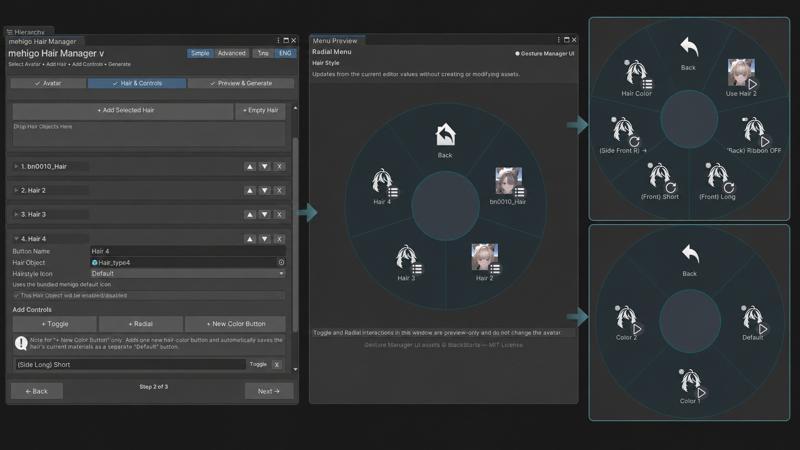

アバターを選択
アバターのルートを選ぶと、Descriptorと出力フォルダを自動検出します。
Modular Avatarを使ったVRChat髪型メニュー、BlendShape、Material Preset設定を分かりやすいUnity Editorワークフローで補助します。
リポジトリURL: https://mehigosleep.github.io/mehigo-hair-manager/vpm.json
アバターのルートを選ぶと、Descriptorと出力フォルダを自動検出します。
髪型、Toggle・Radial BlendShape、Material Preset、メニューアイコンを追加します。
メニューを確認し、Build時に使用するAssetとModular Avatar Componentを準備します。
髪型とコントロールを設定し、アバターで使用するメニューをリアルタイムプレビューで確認できます。

Materialの切り替え機能です： このv1.2.0スクリーンショットに表示される「Hair Color」は以前の表記です。各ボタンは既存のMaterial Assetを切り替えます。
Animator、Menu、Parameter、Animation、Modular Avatar Componentの設定を準備します。non-destructiveな統合はコア依存関係であるModular AvatarがBuild時に実行します。
bd_によるModular Avatarが必須のコア依存関係です。本プロジェクトはコミュニティ製であり、Modular Avatarの公式プロジェクトではなく、開発者による提携・推奨を示すものではありません。
Unity 2022.3、VRChat Avatars SDK、コア依存関係としてModular Avatarが必要です。